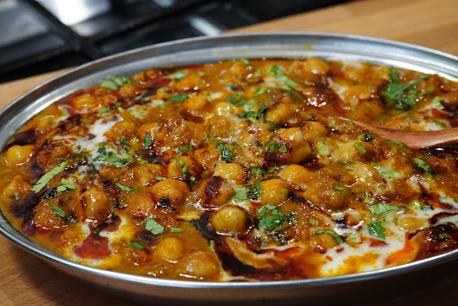

Chickpea & Cauliflower Curry
home

Adapted from Original Recipe by Curries with Bumbi:
Youtube
Blogspot
This is one of my favorite recipies to make when I want something healthy and filling that lasts a few days. I took the wonderful recipe base from Curries with Bumbi, and adapted it to my taste and preffered ingredients. Enjoy!
Time
Takes about 1h30 - 2h total
Serving Size:
Serves 5-6 people
Ingredients
For the Tomato Puree:
- 3 medium tomatoes
- 4 cloves garlic
- 1-inch piece ginger
For the Curry Base:
- 1 tbsp oil
- 1 large onion, finely chopped
- ½ tbsp tomato paste
- ½ tsp turmeric powder
- 1 heaped tsp Kashmiri chili powder
- 2 tsp ground coriander
- 1 tsp ground cumin
- 2 tsp + 1/4th salt (adjust to taste)
- 2 tsp sugar (to balance the flavors)
- 1 tsp garam masala powder
- 1 tsp crushed dried fenugreek leaves (or powder)
- ¼ tsp black pepper powder
Main Curry Ingredients:
- 1 large can (822 gm with liquid and weighs 484 gm after draining liquid) chickpeas, drained and rinsed (save ⅓ cup for thickening)
- ¼ - ½ a cauliflower head (depending on how much leftovers you want),rinsed and cut into florets
- 1 cup hot water + ½ cup used to puree the chickpeas
- ⅓ cup coconut cream
- 2 tbsp chopped fresh coriander leaves
For the Final Garnish:
- 1 tbsp butter
- 1 drop oil
- 1 tsp sweet paprika (or Kashmiri chili powder)
- Additional fresh coriander leaves and cream for drizzling
Instructions:
- Prepare the Tomato Puree
Blend the tomatoes, garlic, and ginger into a smooth puree. Set aside.
- Cook the Base
- In a pot, heat oil and butter over medium heat.
- Add finely chopped onions and ¼ tsp salt. Sauté until they turn light brown (not too dark).
- Stir in the tomato paste and fry on medium-low heat for a minute.
- Spice it Up
- Add turmeric, Kashmiri chili powder, coriander, and cumin powder.
- Fry the spices on low heat for a few seconds, then add the blended tomato puree.
- Cover and cook on medium heat for 5 minutes.
- Stir, cover partially, and let it thicken.
- Add Chickpeas and Cauliflower
- Stir in salt, sugar, garam masala, and crushed fenugreek
- Add the drained chickpeas and cauliflower and mix well to coat them in the masala.
- Pour in 1 cup hot water and let the flavors blend.
- Thicken the Gravy
- Blend the reserved ⅓ cup chickpeas with ½ cup water to a smooth paste.
- Add this puree to the curry to create a rich, thick consistency.
- Stir in black pepper powder.
- Final Touches
- Do a taste test and adjust the seasonings if needed.
- Add chopped coriander leaves and ⅓ cup heavy cream (or coconut cream for a dairy-free option).
- Cover and cook on low heat for another 5 minutes.
- Plate & Garnish
- In a small pan, heat butter with just a drop of oil over low heat.
- Once melted, turn off the heat and stir in sweet paprika (or Kashmiri chili powder).
- Drizzle this aromatic butter over the chickpea curry.
Serving Suggestions:
Serve hot with naan, roti, or rice for an irresistible meal! You can freeze this curry for 2 months. If you freeze it, follow step 7 just before serving.